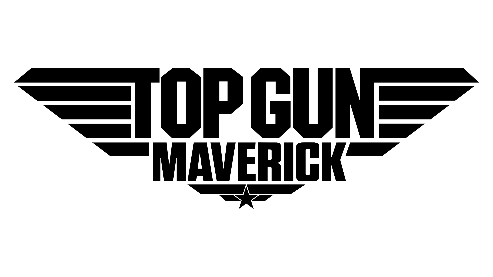
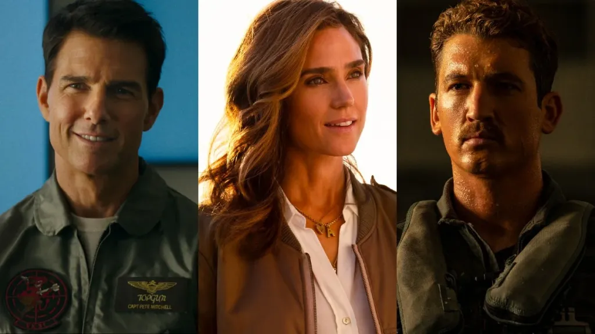

Captain Pete “Maverick” Mitchell (Tom Cruise)
Tom Cruise reprises the role of Captain Pete Mitchell, who many think would
have been promoted past the status of captain by now.
He is more often referred to by his call sign “Maverick,”
and now he test-flies cutting edge planes for the navy.
Maverick tried his hand at becoming an instructor at Top Gun years ago, but he didn’t fit.
That is, until Commander Iceman calls him back to teach the best of the best
how to execute one heck of a mission.
Penny Benjamin
Penny was the daughter of the Admiral the Pete fooled around with in the original “Top Gun.”
She now owns The Hard Deck bar near the Top Gun naval base in San Diego.
She remembers Pete as well as he remembers her, although she married someone else
and now has a daughter. Her husband remarried, so she is single.
Lieutenant Bradley “Rooster” Bradshaw (Miles Teller)
When Warlock and Cyclone show Maverick the roster of students he will be training,
he immediately singles out Bradley Bradshaw, whose call sign is Rooster.
Rooster is Goose’s son, and Maverick not only has the emotional baggage from flying with Goose
(played by Anthony Edwards) back in “Top Gun” and losing him in an accident,
but now facing his son. Rooster’s mom asked Maverick to pull his papers from the naval academy,
which set him back four years in his career. Teller has starred in “The Spectacular Now” (2013)
“Whiplash” (2014), “Fantastic Four” (2015), the “Divergent” films and more recently, “The Offer” series as Alfred S. Ruddy.